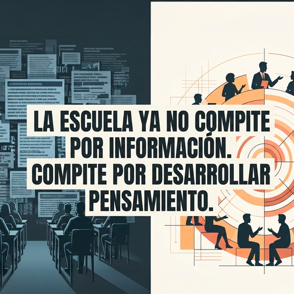

by Pablo Aristizabal NewLa escuela ya no compite por información. Compite por desarrollar pensamiento.
Durante siglos, la escuela fue una de las principales fuentes de acceso al conocimiento. Hoy ese rol cambió para siempre — y el verdadero desafío educativo recién empieza.
Durante siglos, la escuela fue una de las principales fuentes de acceso al conocimiento. Hoy esa realidad cambió. La información está disponible de forma inmediata a través de buscadores, redes sociales, plataformas digitales e inteligencia artificial. En este nuevo escenario, el desafío educativo ya no consiste en transmitir contenidos, sino en desarrollar capacidades cognitivas que permitan comprender, analizar y utilizar esa información de manera significativa.
La irrupción de la inteligencia artificial obliga a replantear el rol de docentes, estudiantes e instituciones. Mientras la IA puede responder preguntas, resumir textos o generar contenidos, habilidades como pensar críticamente, argumentar, formular preguntas relevantes, tomar decisiones y crear soluciones originales continúan siendo profundamente humanas.

En este contexto, el docente deja de ser un transmisor de información para convertirse en un orquestador del desarrollo cognitivo. Su función ya no es explicar para que otros escuchen pasivamente, sino diseñar experiencias que provoquen reflexión, generen desafíos intelectuales y acompañen procesos de aprendizaje más complejos.
La propuesta metodológica PACCC surge como una forma de operacionalizar este nuevo paradigma. A través de las etapas Personaliza, Aprende, Conversa, Crea y Comparte, los estudiantes pasan de consumir información a construir conocimiento, desarrollando competencias que la inteligencia artificial no puede reemplazar por sí sola.

La clave no está en usar más tecnología, sino en utilizarla dentro de una arquitectura pedagógica que fortalezca el pensamiento humano. Cuando el cerebro piensa, la inteligencia artificial potencia. Cuando deja de pensar, la inteligencia artificial reemplaza.
Por eso, el verdadero valor educativo en la era de la IA ya no se mide por la cantidad de información que una persona recuerda, sino por su capacidad para ejercer criterio, creatividad, juicio, autonomía y colaboración inteligente con las nuevas herramientas tecnológicas.

El futuro de la educación no consiste en competir con la inteligencia artificial. Consiste en diseñar ecosistemas donde la tecnología amplifique las capacidades humanas y donde el desarrollo del pensamiento siga siendo el objetivo central del aprendizaje.